- 00 学习指南 如何学习这门编译原理实战课？.md.html
- 00 开篇词 在真实世界的编译器中游历.md.html
- 01 编译的全过程都悄悄做了哪些事情？.md.html
- 02 词法分析：用两种方式构造有限自动机.md.html
- 03 语法分析：两个基本功和两种算法思路.md.html
- 04 语义分析：让程序符合语义规则.md.html
- 05 运行时机制：程序如何运行，你有发言权.md.html
- 06 中间代码：不是只有一副面孔.md.html
- 07 代码优化：跟编译器做朋友，让你的代码飞起来.md.html
- 08 代码生成：如何实现机器相关的优化？.md.html
- 09 Java编译器（一）：手写的编译器有什么优势？.md.html
- 10 Java编译器（二）：语法分析之后，还要做些什么？.md.html
- 11 Java编译器（三）：属性分析和数据流分析.md.html
- 12 Java编译器（四）：去除语法糖和生成字节码.md.html
- 13 Java JIT编译器（一）：动手修改Graal编译器.md.html
- 14 Java JIT编译器（二）：Sea of Nodes为何如此强大？.md.html
- 15 Java JIT编译器（三）：探究内联和逃逸分析的算法原理.md.html
- 16 Java JIT编译器（四）：Graal的后端是如何工作的？.md.html
- 17 Python编译器（一）：如何用工具生成编译器？.md.html
- 18 Python编译器（二）：从AST到字节码.md.html
- 19 Python编译器（三）：运行时机制.md.html
- 20 JavaScript编译器（一）：V8的解析和编译过程.md.html
- 21 JavaScript编译器（二）：V8的解释器和优化编译器.md.html
- 22 Julia编译器（一）：如何让动态语言性能很高？.md.html
- 23 Julia编译器（二）：如何利用LLVM的优化和后端功能？.md.html
- 24 Go语言编译器：把它当作教科书吧.md.html
- 25 MySQL编译器（一）：解析一条SQL语句的执行过程.md.html
- 26 MySQL编译器（二）：编译技术如何帮你提升数据库性能？.md.html
- 27 课前导读：学习现代语言设计的正确姿势.md.html
- 28 前端总结：语言设计也有人机工程学.md.html
- 29 中端总结：不遗余力地进行代码优化.md.html
- 30 后端总结：充分发挥硬件的能力.md.html
- 31 运行时（一）：从0到语言级的虚拟化.md.html
- 32 运行时（二）：垃圾收集与语言的特性有关吗？.md.html
- 33 并发中的编译技术（一）：如何从语言层面支持线程？.md.html
- 34 并发中的编译技术（二）：如何从语言层面支持协程？.md.html
- 35 并发中的编译技术（三）：Erlang语言厉害在哪里？.md.html
- 36 高级特性（一）：揭秘元编程的实现机制.md.html
- 37 高级特性（二）：揭秘泛型编程的实现机制.md.html
- 38 综合实现（一）：如何实现面向对象编程？.md.html
- 39 综合实现（二）：如何实现函数式编程？.md.html
- 40 成果检验：方舟编译器的优势在哪里？.md.html
- 不定期加餐1 远程办公，需要你我具备什么样的素质？.md.html
- 不定期加餐2 学习技术的过程，其实是训练心理素质的过程.md.html
- 不定期加餐3 这几年，打动我的两本好书.md.html
- 不定期加餐4 从身边的牛人身上，我学到的一些优秀品质.md.html
- 不定期加餐5 借助实例，探究C++编译器的内部机制.md.html
- 划重点 7种编译器的核心概念与算法.md.html
- 期末答疑与总结 再次审视学习编译原理的作用.md.html
- 热点问题答疑 如何吃透7种真实的编译器？.md.html
- 用户故事 易昊：程序员不止有Bug和加班，还有诗和远方.md.html
- 知识地图 一起来复习编译技术核心概念与算法.md.html
- 结束语 实战是唯一标准！.md.html
- 捐赠
17 Python编译器（一）：如何用工具生成编译器？
你好，我是宫文学。
最近几年，Python在中国变得越来越流行，我想可能有几个推动力：第一个是因为人工智能热的兴起，用Python可以很方便地使用流行的AI框架，比如TensorFlow；第二个重要的因素是编程教育，特别是很多面对青少年的编程课程，都是采用的Python语言。
不过，Python之所以变得如此受欢迎，虽然有外在的机遇，但也得益于它内在的一些优点。比如说：
- Python的语法比较简单，容易掌握，它强调一件事情只能用一种方法去做。对于老一代的程序员来说，Python就像久远的BASIC语言，很适合作为初学者的第一门计算机语言去学习，去打开计算机编程这个充满魅力的世界。
- Python具备丰富的现代语言特性，实现方式又比较简洁。比如，它既支持面向对象特性，也支持函数式编程特性，等等。这对于学习编程很有好处，能够带给初学者比较准确的编程概念。
- 我个人比较欣赏Python的一个原因，是它能够充分利用开源世界的一些二进制的库，比如说，如果你想研究计算机视觉和多媒体，可以用它调用OpenCV和FFmpeg。Python跟AI框架的整合也是同样的道理，这也是Python经常用于系统运维领域的原因，因为它很容易调用操作系统的一些库。
- 最后，Python还有便于扩展的优势。如果你觉得Python有哪方面能力的不足，你也可以用C语言来写一些扩展。而且，你不仅仅可以扩展出几个函数，你还能扩展出新的类型，并在Python里使用这些新类型。比如，Python的数学计算库是NumPy，它的核心代码是用C语言编写的，性能很高。
看到这里，你自然会好奇，这么一门简洁有力的语言，是如何实现的呢？吉多·范罗苏姆（Python初始设计者）在编写Python的编译器的时候，脑子里是怎么想的呢？
从这一讲开始，我们就进入到Python语言的编译器内部，去看看它作为一门动态、解释执行语言的代表，是如何做词法分析、语法分析和语义分析的，又是如何解释执行的，以及它的运行时有什么设计特点，让它可以具备这些优势。你在这个过程中，也会对编译技术的应用场景了解得更加全面。这也正是我要花3讲的时间，带领你来解析Python编译器的主要原因。
今天这一讲，我们重点来研究Python的词法分析和语法分析功能，一起来看看它在这两个处理阶段都有什么特点。你会学到一种新的语法分析实现思路，还能够学到CST跟AST的区别。
好了，让我们开始吧。
编译源代码，并跟踪调试
首先，你可以从python.org网站下载3.8.1版本的源代码。解压后你可以先自己浏览一下，看看能不能找到它的词法分析器、语法分析器、符号表处理程序、解释器等功能的代码。
Python源代码划分了多个子目录，每个子目录的内容整理如下：
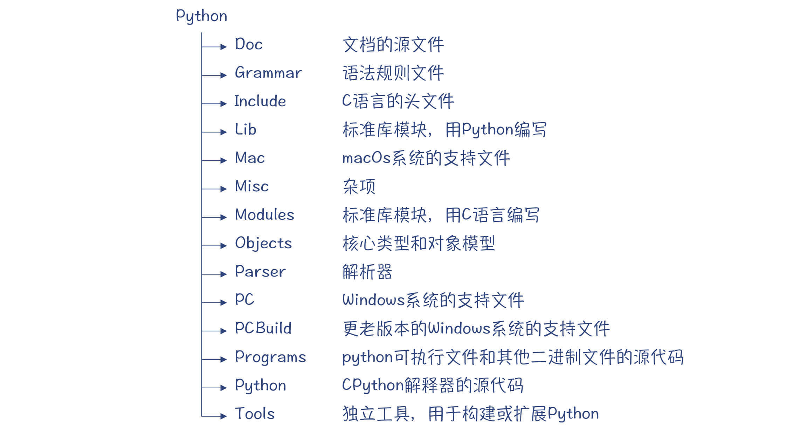
首先，你会发现Python编译器是用C语言编写的。这跟Java、Go的编译器不同，Java和Go语言的编译器是支持自举的编译器，也就是这两门语言的编译器是用这两门语言自身实现的。
实际上，用C语言实现的Python编译器叫做CPython，是Python的几个编译器之一。它的标准库也是由C语言和Python混合编写的。我们课程中所讨论的就是CPython，它是Python语言的参考实现，也是macOS和Linux缺省安装的版本。
不过，Python也有一个编译器是用Python本身编写的，这个编译器是PyPy。它的图标是一条咬着自己尾巴的衔尾蛇，表明这个编译器是自举的。除此之外，还有基于JVM的Jython，这个版本的优势是能够借助成熟的JVM生态，比如可以不用自己写垃圾收集器，还能够调用丰富的Java类库。如果你觉得理解C语言的代码比较困难，你也可以去看看这两个版本的实现。
在Python的“开发者指南”网站上，有不少关于Python内部实现机制的技术资料。请注意，这里的开发者，指的是有兴趣参与Python语言开发的程序员，而不是Python语言的使用者。这就是像Python这种开源项目的优点，它欢迎热爱Python的程序员来修改和增强Python语言，甚至你还可以增加一些自己喜欢的语言特性。
根据开发者指南的指引，你可以编译一下Python的源代码。注意，你要用调试模式来编译，因为接下来我们要跟踪Python编译器的运行过程。这就要使用调试工具GDB。
GDB是GNU的调试工具，做C语言开发的人一般都会使用这个工具。它支持通过命令行调试程序，包括设置断点、单步跟踪、观察变量的值等，这跟你在IDE里调试程序的操作很相似。
开发者指南中有如何用调试模式编译Python，并如何跟GDB配合使用的信息。实际上，GDB现在可以用Python来编写扩展，从而给我们带来更多的便利。比如，我们在调试Python编译器的时候，遇到Python对象的指针（PyObject*），就可以用更友好的方式来显示Python对象的信息。
好了，接下来我们就通过跟踪Python编译器执行过程，看看它在编译过程中都涉及了哪些主要的程序模块。
在tokenizer.c的tok_get()函数中打一个断点，通过GDB观察Python的运行，你会发现下面的调用顺序（用bt命令打印输出后整理的结果）：
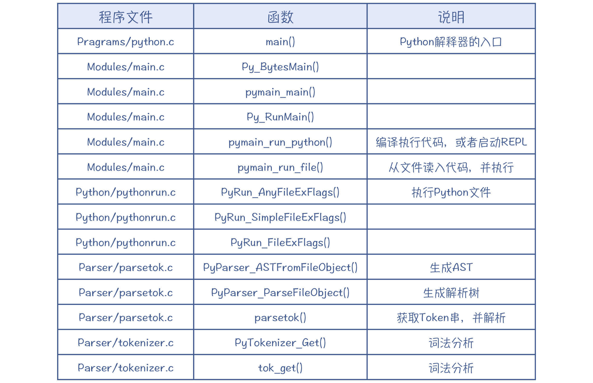
这个过程是运行Python并执行到词法分析环节，你可以看到完整的程序执行路径：
- 首先是python.c，这个文件很短，只是提供了一个main()函数。你运行python命令的时候，就会先进入这里。
- 接着进入Modules/main.c文件，这个文件里提供了运行环境的初始化等功能，它能执行一个python文件，也能启动REPL提供一个交互式界面。
- 之后是Python/pythonrun.c文件，这是Python的解释器，它调用词法分析器、语法分析器和字节码生成功能，最后解释执行。
- 再之后来到Parser目录的parsetok.c文件，这个文件会调度词法分析器和语法分析器，完成语法分析过程，最后生成AST。
- 最后是toknizer.c，它是词法分析器的具体实现。
拓展：REPL是Read-Evaluate-Print-Loop的缩写，也就是通过一个交互界面接受输入并回显结果。
通过上述的跟踪过程，我们就进入了Python的词法分析功能。下面我们就来看一下它是怎么实现的，再一次对词法分析的原理做一下印证。
Python的词法分析功能
首先，你可以看一下tokenizer.c的tok_get()函数。你一阅读源代码，就会发现，这是我们很熟悉的一个结构，它也是通过有限自动机把字符串变成Token。
你还可以用另一种更直接的方法来查看Python词法分析的结果。
./python.exe -m tokenize -e foo.py
补充：其中的python.exe指的是Python的可执行文件，如果是在Linux系统，可执行文件是python。
运行上面的命令会输出所解析出的Token：
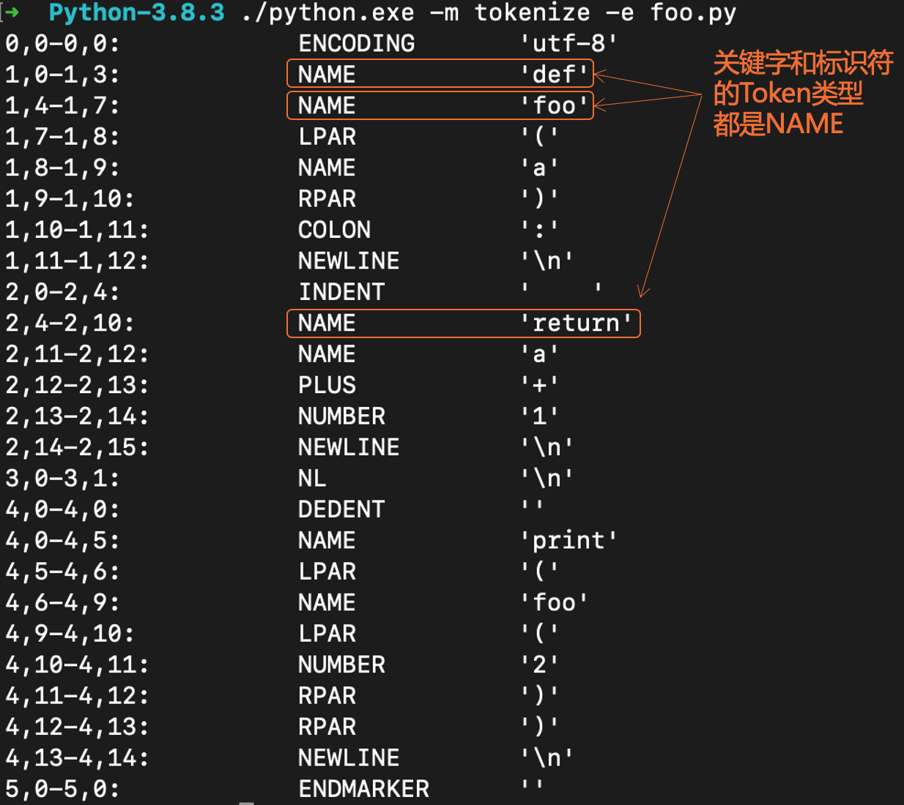
其中的第二列是Token的类型，第三列是Token对应的字符串。各种Token类型的定义，你可以在Grammar/Tokens文件中找到。
我们曾在研究Java编译器的时候，探讨过如何解决关键字和标识符的词法规则冲突的问题。那么Python是怎么实现的呢？
原来，Python在词法分析阶段根本没有区分这两者，只是都是作为“NAME”类型的Token来对待。
补充：Python里面有两个词法分析器，一个是用C语言实现的（tokenizer.c），一个是用Python实现的（tokenizer.py）。C语言版本的词法分析器由编译器使用，性能更高。
所以，Python的词法分析功能也比较常规。其实你会发现，每个编译器的词法分析功能都大同小异，你完全可以借鉴一个比较成熟的实现。Python跟Java的编译器稍微不同的一点，就是没有区分关键字和标识符。
接下来，我们来关注下这节课的重点内容：语法分析功能。
Python的语法分析功能
在GDB中继续跟踪执行过程，你会在parser.c中找到语法分析的相关逻辑：
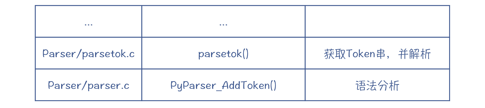
那么，Python的语法分析有什么特点呢？它采用的是什么算法呢？是自顶向下的算法，还是自底向上的算法？
首先，我们到Grammar目录，去看一下Grammar文件。这是一个用EBNF语法编写的Python语法规则文件，下面是从中节选的几句，你看是不是很容易读懂呢？
//声明函数
funcdef: 'def' NAME parameters ['->' test] ':' [TYPE_COMMENT] func_body_suite
//语句
simple_stmt: small_stmt (';' small_stmt)* [';'] NEWLINE
small_stmt: (expr_stmt | del_stmt | pass_stmt | flow_stmt |
import_stmt | global_stmt | nonlocal_stmt | assert_stmt)
通过阅读规则文件，你可以精确地了解Python的语法规则。
这个规则文件是给谁用的呢？实际上Python的编译器本身并不使用它，它是给一个pgen的工具程序（Parser/pgen）使用的。这个程序能够基于语法规则生成解析表（Parse Table），供语法分析程序使用。有很多工具能帮助你生成语法解析器，包括yacc（GNU版本是bison）、ANTLR等。
有了pgen这个工具，你就可以通过修改规则文件来修改Python语言的语法，比如，你可以把函数声明中的关键字“def”换成“function”，这样你就可以用新的语法来声明函数。
pgen能给你生成新的语法解析器。parser.c的注释中讲解了它的工作原理。它是把EBNF转化成一个NFA，然后再把这个NFA转换成DFA。基于这个DFA，在读取Token的时候，编译器就知道如何做状态迁移，并生成解析树。
这个过程你听上去是不是有点熟悉？实际上，我们在第2讲讨论正则表达式工具的时候，就曾经把正则表达式转化成了NFA和DFA。基于这个技术，我们既可以做词法解析，也可以做语法解析。
实际上，Python用的是LL(1)算法。我们来回忆一下LL(1)算法的特点：针对每条语法规则，最多预读一个Token，编译器就可以知道该选择哪个产生式。这其实就是一个DFA，从一条语法规则，根据读入的Token，迁移到下一条语法规则。
我们通过一个例子来看一下Python的语法分析特点，这里采用的是我们熟悉的一个语法规则：
add: mul ('+' mul)*
mul: pri ('*' pri)*
pri: IntLiteral | '(' add ')'
我把这些语法规则对应的DFA画了出来。你会看到，它跟采用递归下降算法的思路是一样的，只不过换了种表达方式。
不过，跟手写的递归下降算法为解析每个语法规则写一个函数不同，parser.c用了一个通用的函数去解析所有的语法规则，它所依据的就是为每个规则所生成的DFA。
主要的实现逻辑是在parser.c的PyParser_AddToken()函数里，你可以跟踪它的实现过程。为了便于你理解，我模仿Python编译器，用上面的文法规则解析了一下“2+3*4+5”，并把整个解析过程画成图。
在解析的过程，我用了一个栈作为一个工作区，来保存当前解析过程中使用的DFA。
第1步，匹配add规则。把add对应的DFA压到栈里，此时该DFA处于状态0。这时候预读了一个Token，是字面量2。
第2步，根据add的DFA，走mul-1这条边，去匹配mul规则。这时把mul对应的DFA入栈。在示意图中，栈是从上往下延伸的。
第3步，根据mul的DFA，走pri-1这条边，去匹配pri规则。这时把pri对应的DFA入栈。
第4步，根据pri的DFA，因为预读的Token是字面量2，所以移进这个字面量，并迁移到状态3。同时，为字面量2建立解析树的节点。这个时候，又会预读下一个Token，'+'号。
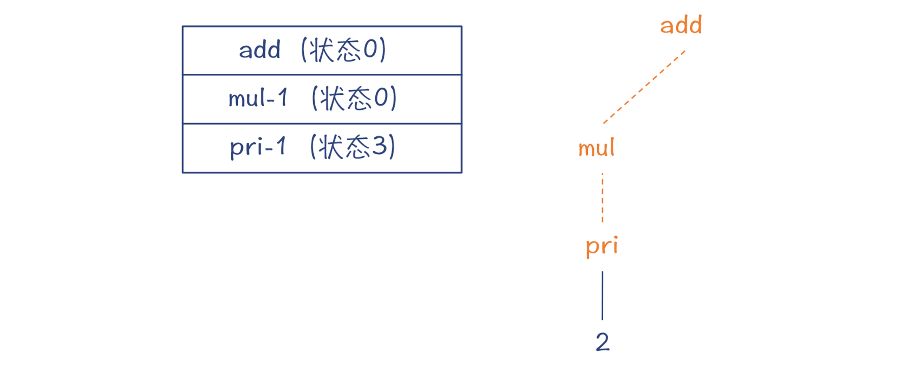
第5步，从栈里弹出pri的DFA，并建立pri节点。因为成功匹配了一个pri，所以mul的DFA迁移到状态1。
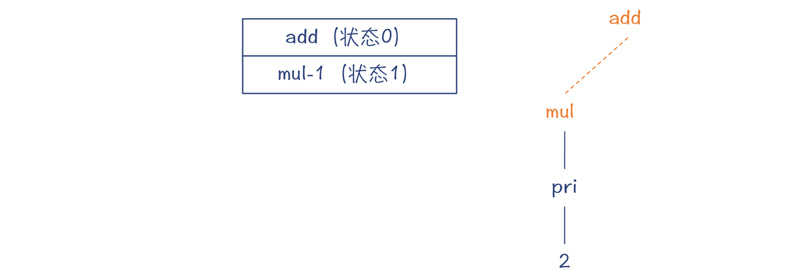
第6步，因为目前预读的Token是'+'号，所以mul规则匹配完毕，把它的DFA也从栈里弹出。而add对应的DFA也迁移到了状态1。
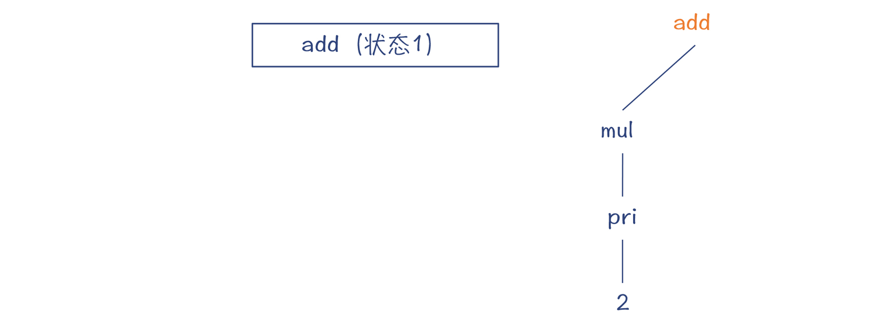
第7步，移进'+'号，把add的DFA迁移到状态2，预读了下一个Token：字面量3。这个Token是在mul的First集合中的，所以就走mul-2边，去匹配一个mul。
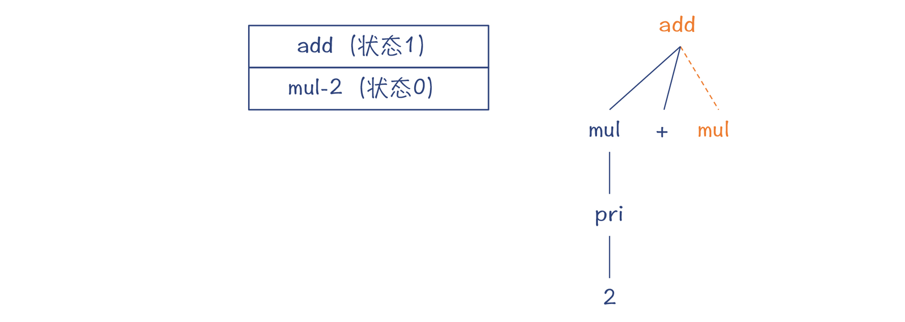
按照这个思路继续做解析，直到最后，可以得到完整的解析树：

总结起来，Python编译器采用了一个通用的语法分析程序，以一个栈作为辅助的数据结构，来完成各个语法规则的解析工作。当前正在解析的语法规则对应的DFA，位于栈顶。一旦当前的语法规则匹配完毕，那语法分析程序就可以把这个DFA弹出，退回到上一级的语法规则。
所以说，语法解析器生成工具，会基于不同的语法规则来生成不同的DFA，但语法解析程序是不变的。这样，你随意修改语法规则，都能够成功解析。
上面我直观地给你解读了一下解析过程。你可以用GDB来跟踪一下PyParser_AddToken()函数，从而了解得更具体。你在这个函数里，还能够看到像下面这样的语句，这是对外输出调试信息。
D(printf(" Push '%s'\n", d1->d_name)); //把某DFA入栈
你还可以用“-d”参数运行python，然后在REPL里输入程序，这样它就能打印出这些调试信息，包括什么时候把DFA入栈、什么时候出栈，等等。我截取了一部分输出信息，你可以看一下。
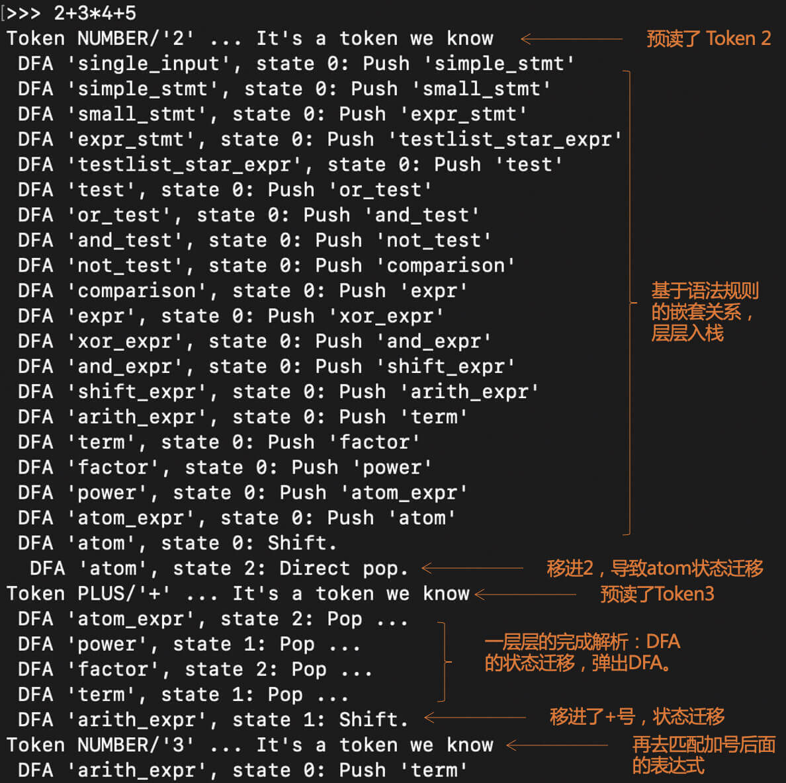
在Python的语法规则里，arith_expr指的是加减法的表达式，term指的是乘除法的表达式，atom指的是基础表达式。这套词汇也经常被用于语法规则中，你可以熟悉起来。
好了，现在你已经知道了语法解析的过程。不过你可能注意到了，上面的语法解析过程形成的结果，我没有叫做是AST，而是叫做解析树（Parse Tree）。看到这里，你可能会产生疑问：解析源代码不就会产生AST吗？怎么这里是生成一个叫做解析树的东西？什么是解析树，它跟AST有啥区别？别着急，下面我就来为你揭晓答案。
解析树和AST的区别
解析树又可以叫做CST（Concrete Syntax Tree，具体语法树），与AST（抽象语法树）是相对的：一个具体，一个抽象。
它俩的区别在于：CST精确地反映了语法规则的推导过程，而AST则更准确地表达了程序的结构。如果说CST是“形似”，那么AST就是“神似”。
你可以看看在前面的这个例子中，所形成的CST的特点。
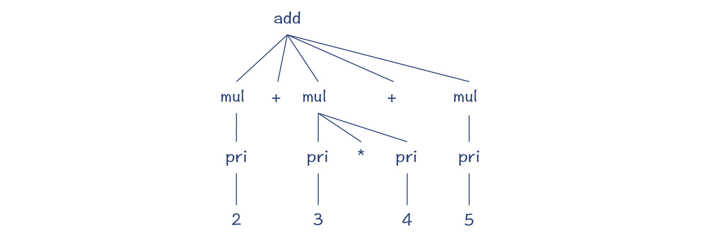
首先，加法是个二元运算符，但在这里add节点下面对应了两个加法运算符，跟原来加法的语义不符。第二，很多节点都只有一个父节点，这个其实可以省略，让树结构更简洁。
所以，我们期待的AST其实是这样的：
这就是CST和AST的区别。
理解了这个知识点以后，我们拿Python实际的CST和AST来做一下对比。在Python的命令行中，输入下面的命令：
>>> from pprint import pprint
>>> import parser
>>> cst = parser.expr('2+3+4') //对加法表达式做解析
>>> pprint(parser.st2list(cst)) //以美观的方式打印输出CST
你会得到这样的输出结果：
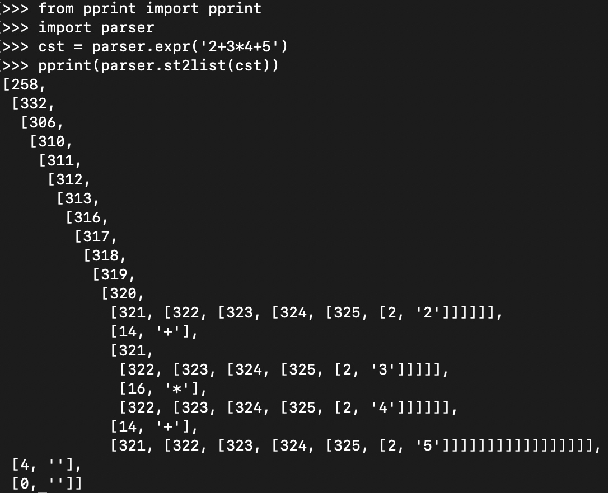
这是用缩进的方式显示了CST的树状结构，其中的数字是符号和Token的编号。你可以从Token的字典（dict）里把它查出来，从而以更加直观的方式显示CST。
我们借助一个lex函数来做美化的工作。现在再显示一下CST，就更直观了：
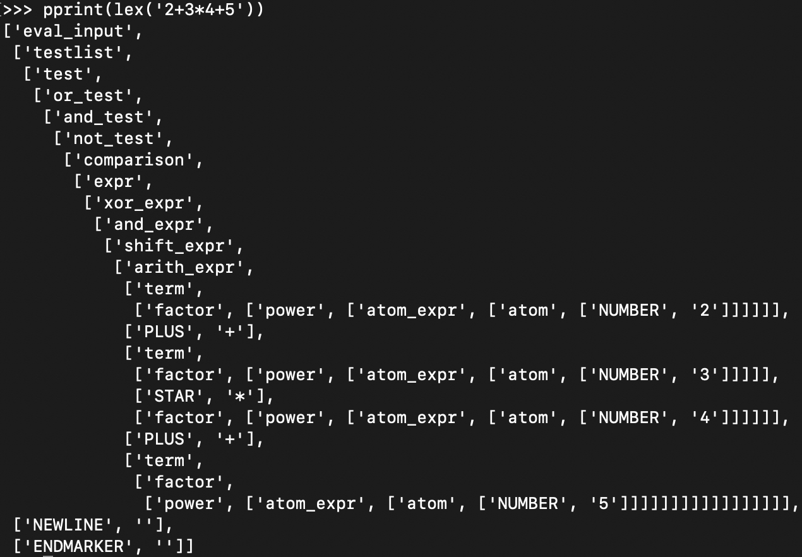
那么，Python把CST转换成AST，会是什么样子呢？
你可以在命令行敲入下面的代码，来显示AST。它虽然是以文本格式显示的，但你能发现它是一个树状结构。这个树状结构就很简洁：
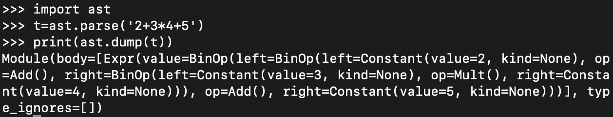
如果你嫌这样不够直观，还可以用另一个工具“instaviz”，在命令行窗口用pip命令安装instaviz模块，以图形化的方式更直观地来显示AST。instaviz是“Instant Visualization”（立即可视化）的意思，它能够图形化显示AST。
$ pip install instaviz
然后启动Python，并敲入下面的代码：
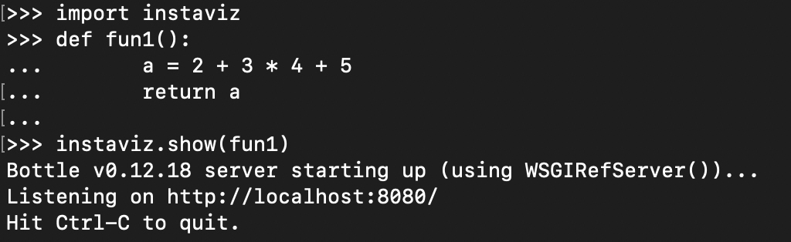
instaviz会启动一个Web服务器，你可以在浏览器里通过http://localhost:8080来访问它，里面有图形化的AST。你可以看到，这个AST比起CST来，确实简洁太多了。
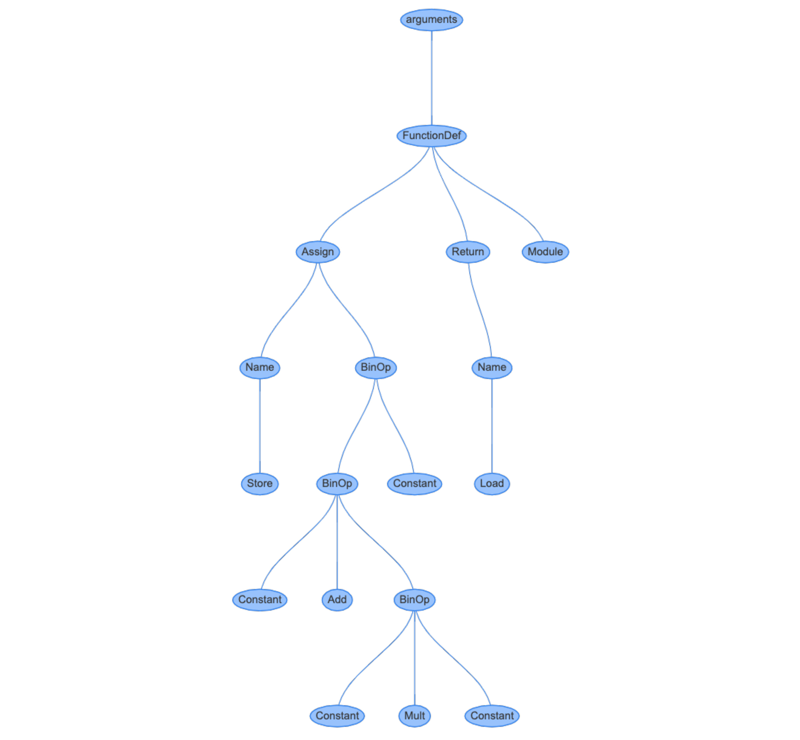
点击代表“2+3*4+5”表达式的节点，你可以看到这棵子树的各个节点的属性信息：
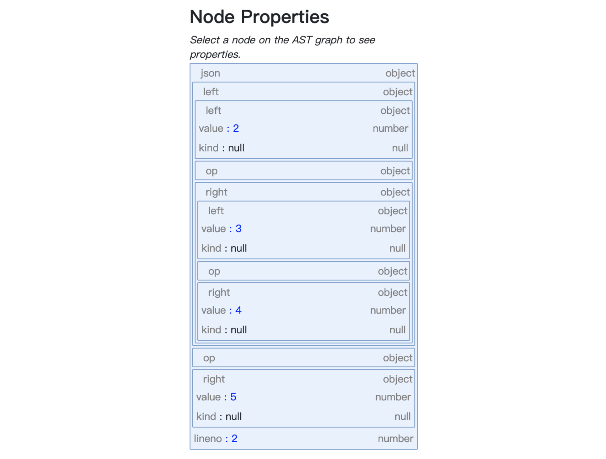
总结起来，在编译器里，我们经常需要把源代码转变成CST，然后再转换成AST。生成CST是为了方便编译器的解析过程。而转换成AST后，会让树结构更加精简，并且在语义上更符合语言原本的定义。
那么，Python是如何把CST转换成AST的呢？这个过程分为两步。
首先，Python采用了一种叫做ASDL的语言，来定义了AST的结构。ASDL是“抽象语法定义语言（Abstract Syntax Definition Language）”的缩写，它可以用于描述编译器中的IR以及其他树状的数据结构。你可能不熟悉ASDL，但可能了解XML和JSON的Schema，你可以通过Schema来定义XML和JSON的合法的结构。另外还有DTD、EBNF等，它们的作用都是差不多的。
这个定义文件是Parser/Python.asdl。CPython编译器中包含了两个程序（Parser/asdl.py和Parser/asdl_c.py）来解析ASDL文件，并生成AST的数据结构。最后的结果在Include/Python-ast.h文件中。
到这里，你可能会有疑问：这个ASDL文件及解析程序不就是生成了AST的数据结构吗？为什么不手工设计这些数据结构呢？有必要采用一种专门的DSL来做这件事情吗？
确实如此。Java语言的AST，只是采用了手工设计的数据结构，也没有专门用一个DSL来生成。
但Python这样做确实有它的好处。上一讲我们说过，Python的编译器有多种语言的实现，因此基于统一的ASDL文件，我们就可以精准地生成不同语言下的AST的数据结构。
在有了AST的数据结构以后，第二步，是把CST转换成AST，这个工作是在Python/ast.c中实现的，入口函数是PyAST_FromNode()。这个算法是手写的，并没有办法自动生成。
课程小结
今天这一讲，我们开启了对Python编译器的探究。我想给你强调下面几个关键要点：
- 非自举。CPython的编译器是用C语言编写的，而不是用Python语言本身。编译器和核心库采用C语言会让它性能更高，并且更容易与各种二进制工具集成。
- 善用GDB。使用GDB可以跟踪CPython编译器的执行过程，加深对它的内部机制的理解，加快研究的速度。
- 编译器生成工具pgen。pgen能够根据语法规则生成解析表，让修改语法的过程变得更加容易。
- 基于DFA的语法解析过程。基于pgen生成的解析表，通过DFA驱动完成语法解析过程，整个执行过程跟递归下降算法的原理相同，但只需要一个通用的解析程序即可。
- 从CST到AST。语法分析首先生成CST，接着生成AST。CST准确反映了语法推导的过程，但会比较啰嗦，并且可能不符合语义。AST同样反映了程序的结构，但更简洁，并且支持准确的语义。
本讲的思维导图我也放在这里了，供你参考：
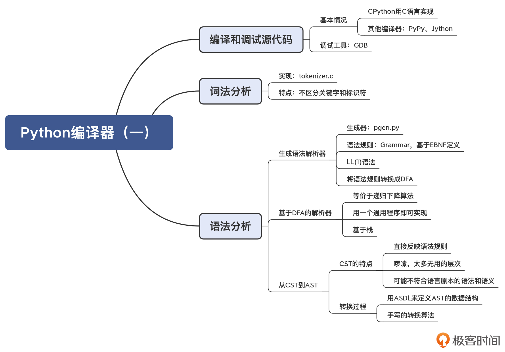
一课一思
这一讲我们提到，Python的词法分析器没有区分标识符和关键字，但这样为什么没有影响到Python的语法分析的功能呢？你可以结合语法规则文件和对语法解析过程的理解，谈谈你的看法。如果你能在源代码里找到确定的答案，那就更好了！
欢迎你在留言区中分享你的见解，也欢迎你把今天的内容分享给更多的朋友，我们下一讲再见。
参考资料
GDB的安装和配置：参考这篇文章。
© 2019 - 2023 Liangliang Lee. Powered by gin and hexo-theme-book.